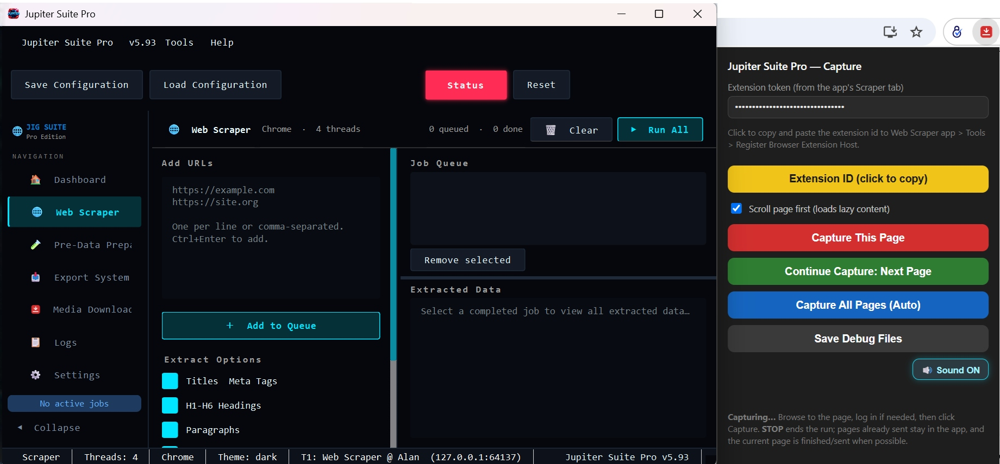

JUPITER INNOVATION GROUP · V5.93
Jupiter Suite Pro
Next-Generation Social Web Scraper, Progressive Media Downloader & Real-Browser Bridge for NLP Data Pipelines
🎥 Capture & Media Demo
🖥️ Desktop UI & Chrome Extension

🌐 Supported Social & Web Platforms
★ Reddit (New: Comments, Nested Replies & Media)
Instagram (Reels, Posts & Comments)
YouTube (Videos, Shorts & Language Meta)
TikTok (Comments & CDN Media)
Facebook (Comments & Video Fallbacks)
X / Twitter (Threads & Media)
LinkedIn (Post Comments)
Douyin & Bilibili
⚡ Core Architecture
- Real Browser Extension Bridge: Live Chrome profile leverages active cookies and TLS fingerprint to smoothly pass anti-bot / Cloudflare layers.
- Native Messaging Host: High-performance
JupiterMediaHost.exe communicates with desktop worker threads.
- Progressive Media Fallbacks: Multi-engine downloads using yt-dlp, progressive social CDN streams, and extension sniffers.
- Companion NLP Suite: Unified mesh licensing with Data Preparation, SEA-Lion regional NLP, and transformer modeling apps.
🔥 Reddit Integration Workflow
- Thread Expansion: Automated recursive cycles for "View More Comments" and nested comment trees.
- Multi-Format Media: Extracts Reddit native video packages (v.redd.it audio/video muxing) and high-res image galleries (i.redd.it).
- Structured Exports: Exports post metadata, upvote ratios, top-level submissions, and author profiles into ready-to-train CSV/JSON datasets.
📊 Feature Breakdown Matrix
| Module |
Capabilities & Implementation |
Status |
| Reddit Capture |
Subreddit threads, multi-level comment expanders, Reddit video muxing |
Integrated |
| Instagram / Reels |
/p/ and /reels/ comment modals, CDN direct download, progressive fallback |
Active |
| YouTube Engine |
Watch & Shorts, reply expansion, live player audio language track meta |
Active |
| Bypass Layer |
Live session cookies, soft-refresh flows, human DOM inspection |
Active |
| NLP Data Prep |
Direct export to CSV, JSON, spaCy components, and Jupyter Notebook pipelines |
Active |